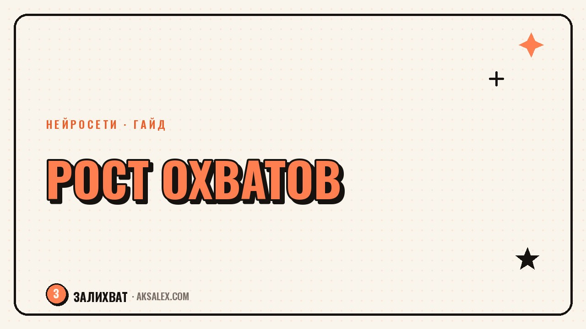

Как вырасти в охватах с помощью нейросетей

Охваты падают не потому, что алгоритм тебя невзлюбил, а чаще всего потому, что контент однообразный, хуки слабые, а публикации выходят нерегулярно. Нейросети не заменят твою экспертность и голос, но снимают рутину, которая съедает время на то, что реально двигает охваты - тесты, анализ и объём идей. Разберём, где именно ИИ дает прирост, а где только создает иллюзию работы.
Почему охваты падают и при чём тут нейросети
Соцсети ранжируют контент по вовлечённости в первые минуты после публикации: досмотры, лайки, комментарии, сохранения. Если ролик или пост не цепляет за первые секунды, алгоритм просто не показывает его дальше. Нейросети помогают не гадать, а быстро проверять гипотезы: сгенерировать десяток вариантов заголовка, хука или обложки и выбрать тот, что реально работает.
Второй момент - регулярность. Охваты растут у тех, кто публикует стабильно, а не у тех, кто выкладывает один шедевр в месяц. ИИ ускоряет подготовку черновиков, сценариев и текстов, поэтому у тебя физически появляется время публиковать чаще без потери качества.
Что нейросети реально ускоряют
- Генерация идей и тем на неделю или месяц вперёд
- Варианты хуков и заголовков для теста
- Черновики сценариев и текстов постов
- Расшифровка и анализ конкурентных роликов
- Обложки и превью для карточек в ленте
Обрати внимание: во всех пунктах ИИ создает черновик или вариант, а не финальный продукт. Финальное решение - обрезать, переозвучить, переписать под свой тон - всегда за тобой. Это и отличает контент, который растет, от контента, который выглядит как сгенерированный.
Пошаговая схема на неделю
Шаг 1. Соберите пул тем
Попроси нейросеть накидать 15-20 тем под твою нишу, отталкиваясь от вопросов аудитории и трендовых форматов. Из этого списка ты сам вычеркиваешь то, что не откликается лично тебе - без личного интереса ролик будет вымученным, и это видно.
Шаг 2. Сделайте 3-5 вариантов хука на каждую тему
Хук - первые 2-3 секунды ролика или первая строка поста. Здесь окупается количество вариантов: ИИ выдает разные заходы (вопрос, конфликт, цифра, личная история), а ты выбираешь тот, что звучит естественно в твоём голосе.
Хук, который придумала нейросеть и который ты не смог бы произнести вслух своим голосом - плохой хук, даже если он статистически «работает» у других.
Таблица: задачи и инструменты
| Задача | Что использовать | Что проверить руками |
|---|---|---|
| Идеи и темы | Текстовая нейросеть-чат | Актуальность и релевантность нише |
| Хуки и заголовки | Текстовая нейросеть-чат | Звучит ли естественно вслух |
| Сценарий ролика | Текстовая нейросеть-чат | Тайминг и логика повествования |
| Обложка | Генератор изображений | Читаемость текста на превью |
| Расшифровка чужих роликов | Инструмент транскрибации | Не копировать структуру дословно |
Частые ошибки при росте охватов через ИИ
Самая частая ошибка - публиковать текст нейросети как есть, без редактуры под свой тон голоса. Аудитория подсознательно чувствует шаблонность фраз, и вовлечённость падает даже при хорошей теме.
Вторая ошибка - опираться только на один формат хука или один тип обложки, потому что он один раз выстрелил. Алгоритмы и аудитория устают от повторов быстрее, чем кажется, поэтому важно постоянно тестировать новые варианты, а не эксплуатировать один найденный приём до истощения.
- Публикация без правок под свой голос
- Игнор аналитики - не смотреть, что реально сработало
- Одна и та же структура хука в каждом ролике
- Слишком общие темы без привязки к своей нише
Как измерять результат
Смотри не только на охваты, но и на удержание - процент досмотра ролика и время чтения поста. Именно эти метрики показывают, реально ли хук и структура удерживают внимание, или охваты выросли случайно из-за внешнего фактора вроде тренда.
Веди простую таблицу: тема, тип хука, охваты, удержание. Через 3-4 недели станет видно, какие форматы стабильно работают именно у тебя - и уже эти паттерны стоит масштабировать с помощью нейросетей, а не искать заново каждую неделю.
Частые вопросы
Можно ли вырасти в охватах только за счёт нейросетей, без своего лица и голоса?
Частично да, но алгоритмы и аудитория лучше реагируют на живую подачу. ИИ ускоряет подготовку, а удержание и доверие всё равно строятся на твоей узнаваемой манере.
Сколько вариантов хука стоит генерировать на один ролик?
Обычно достаточно 3-5 вариантов, чтобы было из чего выбирать, но не тратить на это больше времени, чем на сам ролик.
Как понять, что текст от нейросети звучит шаблонно?
Прочитай его вслух. Если фразы кажутся канцелярскими или слишком общими, перепиши своими словами, сохранив структуру.
Нужно ли менять стратегию охватов каждый месяц?
Не менять стратегию целиком, а регулярно тестировать новые хуки и форматы внутри своей ниши, отслеживая удержание.
Помогают ли нейросети с обложками реально поднять охваты?
Обложка влияет на кликабельность в ленте, но не на удержание внутри ролика. Она важна, но это лишь один из факторов роста.
а не за неделю